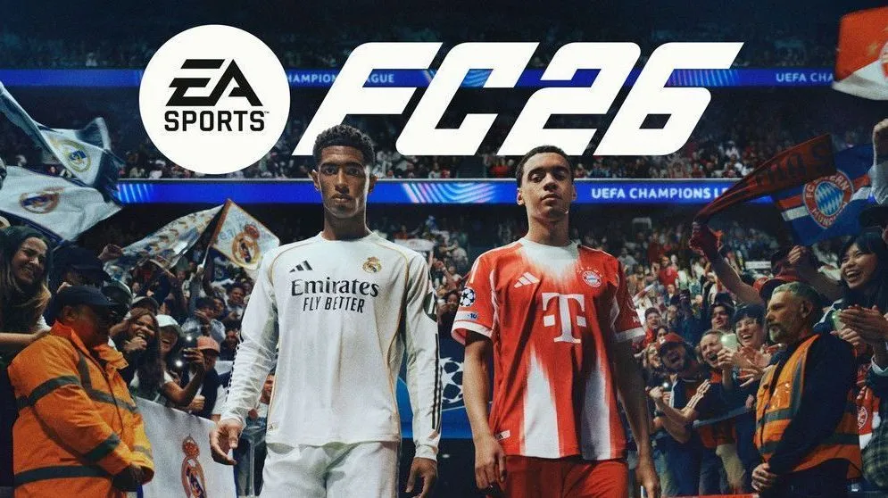

EA FC 26 revela primeiras novidades para os jogadores
A EA Sports apresentou detalhes iniciais do próximo título da série, aumentando a expectativa da comunidade.A EA Sports divulgou novas informações sobre EA FC 26, próximo jogo da franquia de futebol. As novidades incluem melhorias na jogabilidade, ajustes na inteligência artificial e mudanças nos principais modos de jogo.
Entre os destaques está a promessa de partidas mais realistas, com movimentação aprimorada dos atletas e respostas mais rápidas aos comandos dos jogadores.
O modo Ultimate Team também deve receber novidades importantes, incluindo novos desafios, recompensas e opções de personalização para os clubes.
Segundo a EA, o objetivo é tornar a experiência mais dinâmica e competitiva, atendendo aos pedidos feitos pela comunidade ao longo dos últimos anos.
Nas redes sociais, muitos fãs demonstraram entusiasmo com as novidades reveladas e aguardam a divulgação de novos trailers e informações oficiais.
A expectativa é que EA FC 26 seja lançado ainda este ano para PC, PlayStation e Xbox, trazendo mais recursos e conteúdos para os amantes dos jogos de futebol.
⬅ Voltar